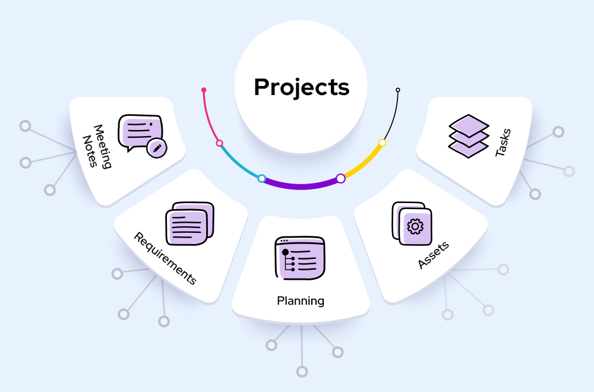

1.CV Mate
Developed a robust CV mate project using HTML, CSS, NodeJs, MongoDB, React, and JavaScript. Gained
extensive knowledge and hands-on experience in web development, database management, and frontend
frameworks.
Demonstrated strong problem-solving skills and the ability to work effectively in a team environment.
2.Book Selling and Buying portal
Created an innovative online book selling and buying platform during a hackathon hosted by Parul
University.
Leveraged HTML, CSS, Bootstrap, MySql, PHP, and JavaScript to develop a user-friendly and secure
marketplace.
Acquired valuable experience in full-stack web development, database integration, and collaboration
within a
competitive environment.
3.Scientific Calculator
I created a comprehensive scientific calculator using Object-Oriented Programming (OOP) concepts in JavaFX. This calculator incorporates a wide range of basic scientific functions as well as a visually
interactive Trigonometric Graph feature.
I designed this calculator to cater to both basic and advanced scientific calculations. Users can
perform fundamental arithmetic operations and explore trigonometric functions through an interactive
graphing feature.
